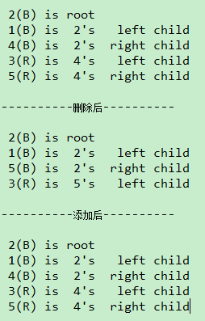

【编程基础】Java 实现红黑树
vecrates
12月 14, 2017
简介
红黑树也是二叉查找树的一种，它在二叉查找树的基础之上对每个结点的属性增加了红、黑两种颜色，然后对结点的颜色进行约束，使之成为高效的二叉查找树。红黑树进行搜索、插入、删除的时间复杂度均为O(log2 n)。
红黑树应该满足以下条件：
- 每个结点要么是红的，要么是黑的
- 根结点是黑的
- 每个叶结点，即空结点（NIL）是黑的
- 如果一个结点是红的，那么它的俩个儿子都是黑的
- 对每个结点，从该结点到其子孙结点的所有路径上包含相同数目的黑结点
只实现，原理传送门：
Java 实现
public class RedBlackTree<T extends Comparable<T>> {
private TreeNode<T> mRoot; //根结点
public RedBlackTree() { }
public RedBlackTree(T value) {
this.mRoot = new TreeNode(value);
}
public void insert(T value) {
TreeNode node = insertNode(new TreeNode(value));
if(node != null) fixAfterInsertion(node);
}
/**
* 插入结点后进行调整
* 情况1：被插入的节点是根节点。
* 处理方法：直接把此节点涂为黑色。
* 情况2：被插入的节点的父节点是黑色。
* 处理方法：什么也不需要做。节点被插入后，仍然是红黑树。
* 情况3：被插入的节点的父节点是红色。
* 处理方法：三种情况
* @param node
*/
private void fixAfterInsertion(TreeNode node) {
if(node == mRoot) {
node.color = Color.BLACK;
return;
}
node.color = Color.RED;
TreeNode parent = node.parent;
//当插入结点的“父结点”是红色时，才进行调整
if(parent != null && parent.color == Color.RED) {
TreeNode uncle = null;
parent = node.parent;
TreeNode grandpa = parent.parent;
//结点的“父结点”在“爷爷结点”的左子树时
if(grandpa != null && grandpa.left == parent) {
uncle = grandpa.right;
/**
* Case 1：当“父结点”和“叔叔结点”都为“红色”时
* (01) 将“父节点”设为黑色
* (02) 将“叔叔节点”设为黑色
* (03) 将“祖父节点”设为“红色”
* (04) 将“祖父节点”设为“当前节点”(红色节点)；即，之后继续对“当前节点”进行操作
*/
if(uncle != null && uncle.color == Color.RED) {
parent.color = Color.BLACK;
uncle.color = Color.BLACK;
grandpa.color = Color.RED;
fixAfterInsertion(grandpa);
} else if(uncle == null || uncle.color == Color.BLACK) {
/**
* Case 2：当 “父结点为红色”，“叔叔结点为黑色”，且“结点是父结点的左子结点”时
* (01) 将“父节点”设为“黑色”
* (02) 将“祖父节点”设为“红色”
* (03) 以“祖父节点”为支点进行右旋
*/
if(parent.left == node) {
parent.color = Color.BLACK;
grandpa.color = Color.RED;
rightRotate(grandpa);
}
/**
* Case 3：当 “父结点为红色”，“叔叔结点为黑色”，且“结点是父结点的右子结点”时
* (01) 将“父节点”作为“新的当前节点”
* (02) 以“新的当前节点”为支点进行左旋
* (03) 左旋变成情况2，再对原结点进行调整
*/
else {
leftRotate(node.parent);
//左旋后变成了“情况2”，相当于 parent 才是新加入的结点，对 parent 进行调整
fixAfterInsertion(parent);
}
}
}
//结点的“父结点”在“爷爷结点”的右子树时
else if(grandpa != null && grandpa.right == node.parent) {
uncle = grandpa.left;
//Case 1:“叔叔结点”为红色
if(uncle != null && uncle.color == Color.RED) {
parent.color = Color.BLACK;
uncle.color = Color.BLACK;
grandpa.color = Color.RED;
fixAfterInsertion(grandpa);
} else if(uncle == null || uncle.color == Color.BLACK) {
//Case 2：当 “父结点为红色”，“叔叔结点为黑色”，且“结点是父结点的左子结点”时
if(parent.left == node) {
rightRotate(parent);
fixAfterInsertion(node);
}
//Case 3：当 “父结点为红色”，“叔叔结点为黑色”，且“结点是父结点的右子结点”时
else {
parent.color = Color.BLACK;
grandpa.color = Color.RED;
leftRotate(grandpa);
}
}
}
}
}
/**
* 以 二叉查找树 的方式插入结点
* @param node
*/
private TreeNode insertNode(TreeNode node) {
TreeNode temp = mRoot;
TreeNode parent = null;
while(temp != null) {
parent = temp;
if(temp.value.compareTo(node.value) > 0) {
temp = temp.left;
} else if(temp.value.compareTo(node.value) < 0) {
temp = temp.right;
} else {
//返回 null，表示存在相同结点，未插入成功，不需要再调整
return null;
}
}
if(parent != null) {
if(parent.value.compareTo(node.value) > 0) {
System.out.println("_" + node.value);
parent.left = node;
node.parent = parent;
}
else {
parent.right = node;
node.parent = parent;
}
} else {
mRoot = node;
}
return node;
}
public void remove(T value) {
TreeNode node = searchNode(value);
if(node != null) removeNode(node);
}
/**
* 删除节点
* @param node
*/
public void removeNode(TreeNode node) {
//Case 1：“待删除结点”左右孩子都不null
if(node.left != null && node.right != null) {
TreeNode nextNode = searchNext(node);
//用“后继结点”的值替换“待删除结点”
node.value = nextNode.value;
//删除“后继结点”
removeNode(nextNode);
return;
}
TreeNode parent = node.parent;
//左 右 或者 null
TreeNode child = node.left != null? node.left : node.right;
//“待删除结点”不是根结点
if(parent != null) {
//“待删除结点”是其父结点的左子结点
if(parent.left == node) {
parent.left = child;
}
//“待删除结点”是其父结点的右子结点
else if(parent.right == node){
parent.right = child;
}
if(child != null)
child.parent = parent;
}
//“待删除结点”是根结点
else {
child.parent = null;
child.color = Color.BLACK;
this.mRoot = child;
}
if(node.color == Color.BLACK) {
//调整
fixAfterRemove(node);
}
node = null;
}
/**
* 删除后修复
* @param node
*/
private void fixAfterRemove(TreeNode node) {
TreeNode parent = node.parent;
TreeNode brother;
//黑结点、非根结点
while(node.color == Color.BLACK && parent != null) {
brother = parent.right;
//是父结点的左子节点
if(parent.left == node) {
//情况1：“待删除结点”的兄弟结点是红色的，它的孩子有的话一定是黑色的
//通过操作转为情况2
if(brother.color == Color.RED) {
parent.color = Color.RED;
brother.color = Color.BLACK;
leftRotate(parent);
}
//Case 2：“待删除结点”的兄弟节点是黑色的，且两个子结点也是黑色的
if(brother.color == Color.BLACK &&
(brother.left == null || brother.left.color == Color.BLACK) &&
(brother.right == null || brother.right.color == Color.BLACK)) {
brother.color = Color.RED;
node = parent; //将调整的结点切换为父结点
parent = node.parent;
} else {
//Case 3：“待删除结点”的兄弟结点是黑色的，且左孩子为红色，有孩子为黑色
if(brother.color == Color.BLACK &&
(brother.left != null && brother.left.color == Color.BLACK) &&
(brother.right == null || brother.right.color == Color.BLACK)) {
brother.left.color = Color.BLACK;
brother.color = Color.RED;
rightRotate(brother);
brother = parent.right;
}
//Case 4：“待删除结点”的兄弟结点右子树为红色，左子树任意
brother.color = parent.color;
parent.color = Color.BLACK;
leftRotate(parent);
node = this.mRoot;
}
}
//“待删除结点”是父结点的右子结点
else {
//Case 1
if(brother.color == Color.RED) {
parent.color = Color.RED;
brother.color = Color.BLACK;
rightRotate(parent);
}
//Case 2
if(brother.color == Color.BLACK &&
(brother.left == null || brother.left.color == Color.BLACK) &&
(brother.right == null || brother.right.color == Color.BLACK)) {
brother.color = Color.RED;
node = parent; //将调整的结点切换为父结点
parent = node.parent;
} else {
//Case 3，右红左黑
if(brother.color == Color.BLACK &&
(brother.right != null && brother.right.color == Color.BLACK) &&
(brother.left == null || brother.left.color == Color.BLACK)) {
brother.right.color = Color.BLACK;
brother.color = Color.RED;
leftRotate(brother);
brother = parent.left;
}
//Case 4
brother.color = parent.color;
parent.color = Color.BLACK;
rightRotate(parent);
node = this.mRoot;
}
}
}
}
private TreeNode searchNode(T value) {
TreeNode temp = mRoot;
while(temp != null) {
if(temp.value.compareTo(value) > 0) {
temp = temp.left;
} else if(temp.value.compareTo(value) < 0) {
temp = temp.right;
} else {
return temp;
}
}
return null;
}
/**
* 按中序遍历的方式寻找结点的后继结点
* @param node
* @return
*/
private TreeNode searchNext(TreeNode node) {
TreeNode temp = node.right == null? null : node.right;
while(temp.left != null) {
temp = temp.left;
}
return temp;
}
private TreeNode getParent(TreeNode node) {
return node.parent;
}
/**
* 左旋
* @param node
*/
private void leftRotate(TreeNode root) {
TreeNode newRoot = root.right;
root.right = newRoot.left;
if(newRoot.left != null) {
newRoot.left.parent = root;
}
//原本的根结点(root)变成左子结点,右子结点(root.right)变成了根结点
newRoot.left = root;
newRoot.parent = root.parent;
root.parent = newRoot;
//对原根结点(root)的父结点(root.parent)进行处理
if(newRoot.parent != null) {
if(newRoot.parent.left == root) {
newRoot.parent.left = newRoot;
} else {
newRoot.parent.right = newRoot;
}
} else {
mRoot = newRoot;
}
}
/**
* 右旋
* @param root
*/
private void rightRotate(TreeNode root) {
TreeNode newRoot = root.left;
root.left = newRoot.right;
if(newRoot.right != null) {
newRoot.right.parent = root;
}
//原本的根结点(root)变成右子结点,左子结点(root.left)变成了根结点
newRoot.right = root;
newRoot.parent = root.parent;
root.parent = newRoot;
//对原根结点(root)的父结点(root.parent)进行处理
if(newRoot.parent != null) {
if(newRoot.parent.left == root) {
newRoot.parent.left = newRoot;
} else {
newRoot.parent.right = newRoot;
}
} else {
mRoot = newRoot;
}
}
enum Color {
RED, BLACK
}
class TreeNode<T extends Comparable<T>> {
T value;
Color color;
TreeNode parent;
TreeNode left;
TreeNode right;
public TreeNode(T value) {
this(value, null, null, null);
}
public TreeNode(T value, TreeNode parent, TreeNode left, TreeNode right) {
this.value = value;
this.parent = parent;
this.left = left;
this.right = right;
}
}
private void print(TreeNode<T> tree, T key, int direction) {
if(tree != null) {
if(direction==0) // tree是根节点
System.out.printf("%2d(B) is root\n", tree.value);
else // tree是分支节点
System.out.printf("%2d(%s) is %2d's %6s child\n", tree.value, tree.color == Color.RED?"R":"B", key, direction==1?"right" : "left");
print(tree.left, tree.value, -1);
print(tree.right,tree.value, 1);
}
}
public void print() {
if (mRoot != null)
print(mRoot, mRoot.value, 0);
}
public static void main(String[] args) {
RedBlackTree<Integer> bst = new RedBlackTree<Integer>();
bst.insert(1);
bst.insert(2);
bst.insert(3);
bst.insert(4);
bst.insert(5);
System.out.println();
bst.print();
bst.remove(4);
System.out.println("\n----------删除后----------\n");
bst.print();
bst.insert(4);
System.out.println("\n----------添加后----------\n");
bst.print();
}
}
